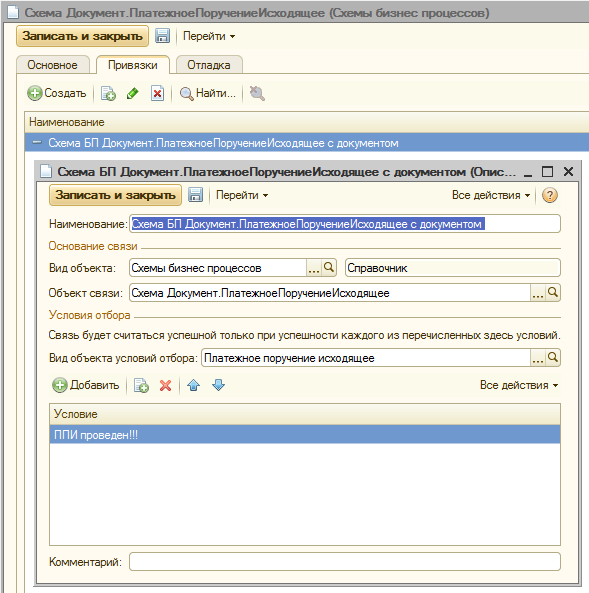
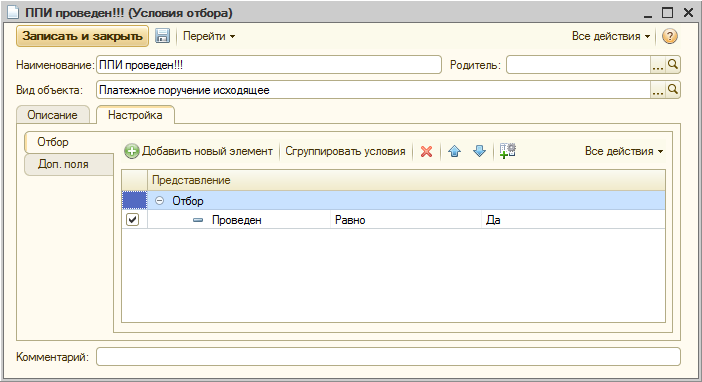
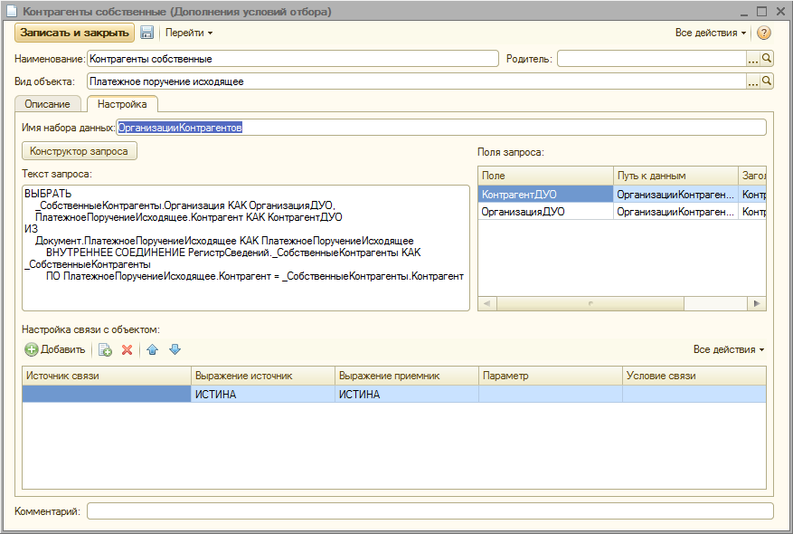

Рисунок 3. Выбор дополненных полей в форме настроек Условия отбора.
| Термин | Описание |
| Механизм | Описываемый механизм описания связей объектов |
| Объект связи | Объект, который будет в результате найден |
| Вид объекта условия отбора | Вид объекта, по значениям реквизитов которого будут искаться Объекты связи |
| Входящий объект | Экземпляр объекта вида «Вид объекта условия отбора», поступающий на вход механизма |
| Условия отбора | Набор правил, задающих условия определения Входящего объекта |
| Связь | Элемент справочника «Связи объектов», описывающий одну конкретную связь между Объектом связи и Входящим объектом. |
| УОН | Управление объектами недвижимости – программная система, в которой реализован Механизм |
Механизм предназначен для определения набора Объектов связи для каждого Входящего объекта. То есть, имея объект, мы можем найти для него набор связанных объектов (Объектов связи).
Настройки механизма позволяют задать для Объекта связи условия, которые определят, найдется ли данная Связь (и, соответственно, Объект связи) для Входящего объекта. Таким образом, условия связи формируются со стороны Объекта связи, но используются со стороны Входящего объекта. И применяются не к результату, а к входящим данным.
Механизм позволяет формировать Связи, хранить их и использовать внешними механизмами, как для определения наличия Связей для Входящего объекта, так и для получения перечня Объектов связи, соответствующих этим Связям.
Основное назначение механизма - быстрый поиск Объектов связи по Входящему объекту.

Рисунок 1. Элемент описания Связи.
В данном примере (Рисунок 1) имеем:
В результате приведенных настроек, указанная схема бизнес-процесса будет доступна в поиске (найдена) для проведенного экземпляра документа "ПлатежноеПоручениеИсходящее".
Для использования механизма в программных разработках существуют точки входа и выхода (функции общего модуля), описанные в ПЗ №УОН-1-1-14 "Механизм описания связей объектов".
Механизм связывает между собой Входящие объекты указанного вида (Вид объекта условия отбора), удовлетворяющие Условию (Условиям) отбора и Объект связи, являющий собой основание Связи. Т.е. позволяет получить для конкретного Входящего объекта перечень Связей (и указанных в них Объектов связи), Условиям отбора которых он удовлетворяет.
При обращении к Механизму со стороны Входящего объекта, он определяет все Связи по Условиям отбора, описанным для этого Входящего объекта:
Из полученного набора Связей, извлекается набор объектов, указанных в поле "Объект связи" каждого из элементов набора. Полученный перечень Объектов связи возвращается пользователю Механизма для дальнейшей работы.
Механизм может быть использован как интерактивно, так и программно. Для интерактивного использования механизма необходимо, что бы доступ к нему был предоставлен непосредственно в форме связываемого объекта (например, в форме "Схемы БП" на вкладке «Привязки» см. Рисунок 1). Если таковое не реализовано, то потребуется выполнить настройку Связей через непосредственный доступ к справочникам:
В общем случае Механизм не имеет вынесенных в интерфейсы УОН средств настройки, потому настройка Связей производится непосредственно в процессе работы с объектами Механизма.
Далее описан пример настройки, приведенной на рисунке (Рисунок 1).
В форме элемента справочника «Описание связи»:
В форме настройки «Условия отбора» (Рисунок 2):

Рисунок 2. Форма настройки Условия отбора.
Рисунок 3. Выбор дополненных полей в форме настроек Условия отбора.
Справочник "Дополнения условий отбора":
Справочник предназначен для расширения перечня доступных полей в таблице правил отбора. Справочник должен быть заполнен до начала заполнения Условий отбора. В результате дополненные поля из этого механизма смогут быть добавлены к основному списку условий отбора (Рисунок 3).

Рисунок 4. Форма элемента справочника "Дополнения условий отбора"
Для настройки дополнений условий отбора необходимо (Рисунок 4):
Результатом настройки является то, что Входящий объект указанного нами в поле «Вид объекта условия отбора» вида данных (в нашем примере - «Платежное поручение исходящее»), при соблюдении им поставленных Условий отбора (в примере мы указали только необходимость его проведенности), получит доступ к Объекту связи, для которого мы описали нашу Связь (в примере – экземпляр справочника «Схемы бизнес-процессов» - «Схема Документ.ПлатежноеПоручениеИсходящее»).
Настройка связи является завершенной тогда, когда, как минимум, указаны:
При заполнении этого необходимого минимума, объекту вида условия отбора будет доступен через описанный Механизм объект - основание связи.